December 23 - 26, 2016
| While Eric was heading out to Montana, I was
being spoiled at my parents' house. My birthday is Christmas Eve, so
we always start the day by celebrating my birthday over breakfast.
Then we celebrate Christmas on the evening of Christmas Eve.
Thankfully it was very warm, so we were able to do a lot of outside play
in between. |
|
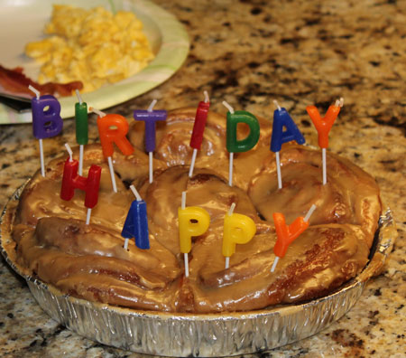 |
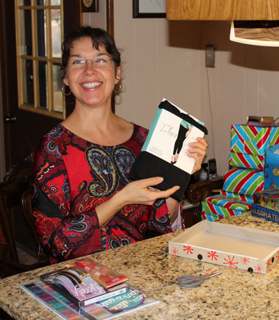 |
| We had birthday cinnamon rolls with breakfast | Birthday gifts, gifts, and more gifts! |
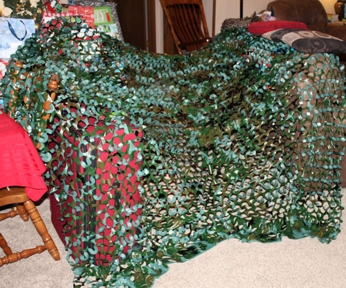 |
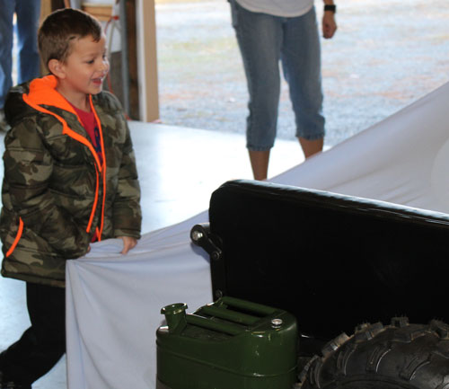 |
| Brodie playing in some camo netting I gave him for Christmas. It hid him pretty well! | Going out to the shop to give him his big gift - a realistic Army jeep! |
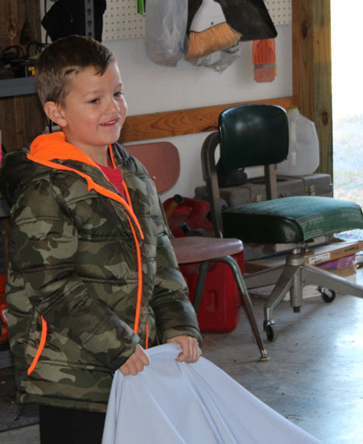 |
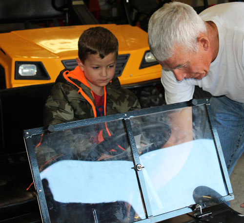 PePaw showing him how to start it. I thought, "There are way too many steps for a 4 year old to learn." However, later that same day he was doing it all himself. He even learned to use only his right foot for braking and the gas pedal. This boy is truly amazing with anything mechanical. However, you can keep your distance if you want him to do boring things like write his name or count to 20. |
| He was a bit overwhelmed | |
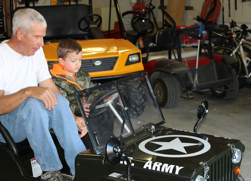 |
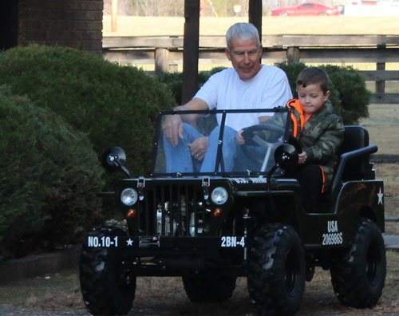 |
| And away they go! PePaw is pretty brave to be the first passenger. | He's thinking hard about driving it now, but after an hour he told me, "I am an excellent driver." |
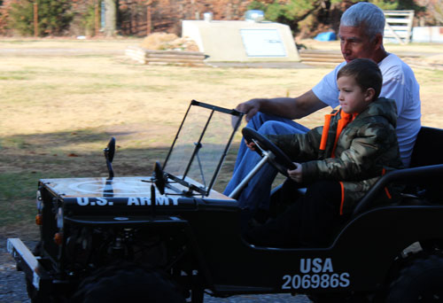 |
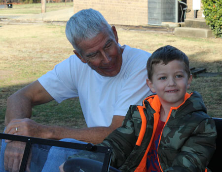 |
| Coming in to pick up a new passenger. | He's pretty proud of himself. |
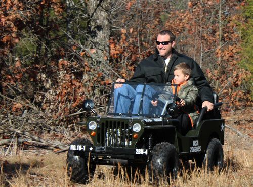 He took his Dad for a LONG ride. Poor Keith, they didn't build
that Jeep for a 6'8" man. |
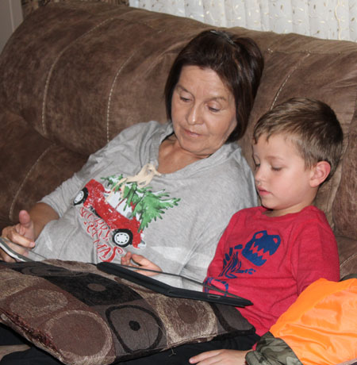 |
| MeMaw, trying to wind him down for a nap using videos | |
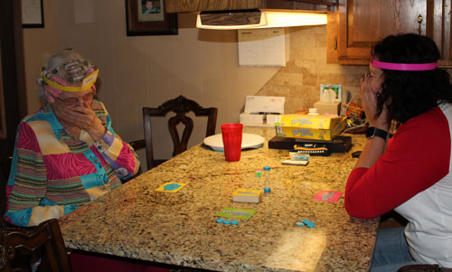 Meanwhile, Gran, Desirae, and I played Scrabble and Headbandz - always good for a laugh |
|
| The only thing he likes less than kisses is when people try to make him take a nap. | |
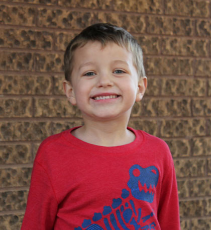 |
|
| Woo hoo - outdoors again, Brodie's favorite place to be. | Me & my beautiful sis |
|
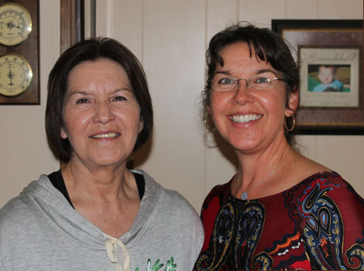 |
|
| Still in love after all these years | Me & Mom trying not to be tickled |
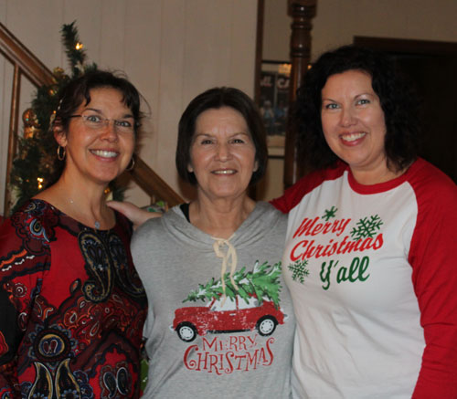 |
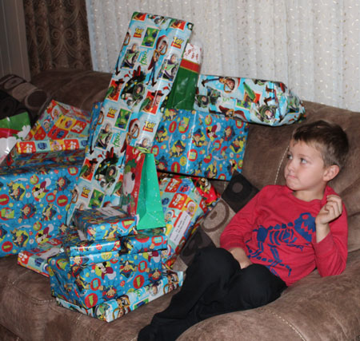 |
| Morton girls | Time for gift opening. It is not an exaggeration to say that we have a mountain of gifts. |
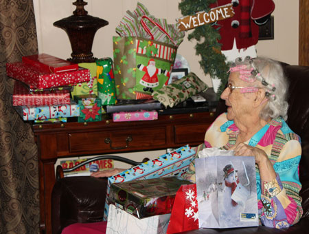 |
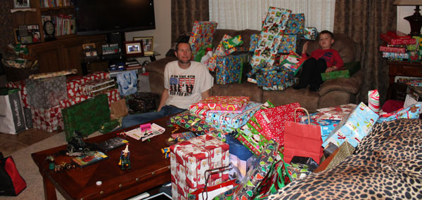 |
| Gran with just part of her pile | "So MANY" - And the gifts for Mom & Dad are cut out of this shot. Yes, we are crazy. |
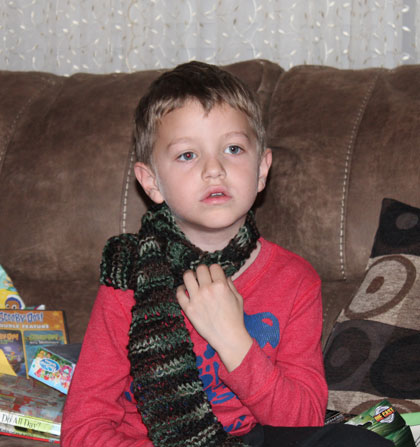 Brodie trying on the scarf I knitted for him. Thanks Mom for
providing the |
|
| On Christmas Day, everyone cleared out so me, Mom, and Dad decided to go
out and enjoy the warm weather. Here we are at Natural Falls, a.k.a. Dripping Springs. |
|
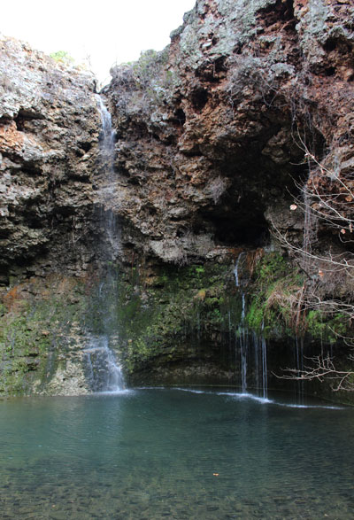 |
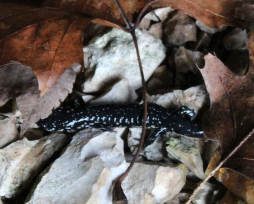 I said, "Look, a fishing lure" and reached down to pick it up. It ran one way and I jumped the other! |
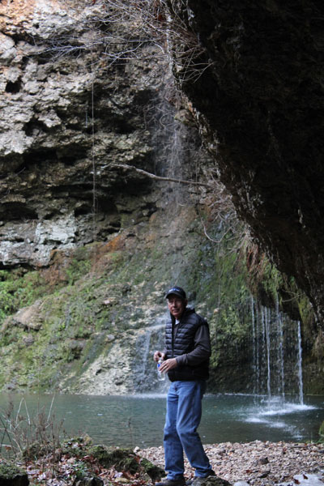 |
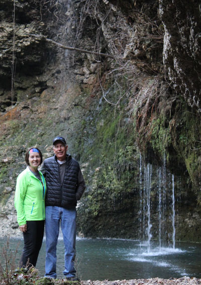 |
| I like this picture of my parents - Marcella & Leon | |
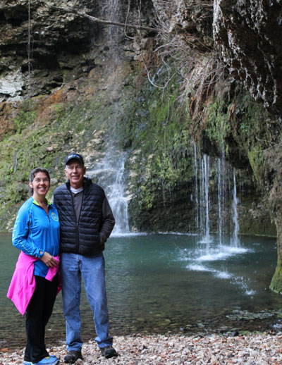 |
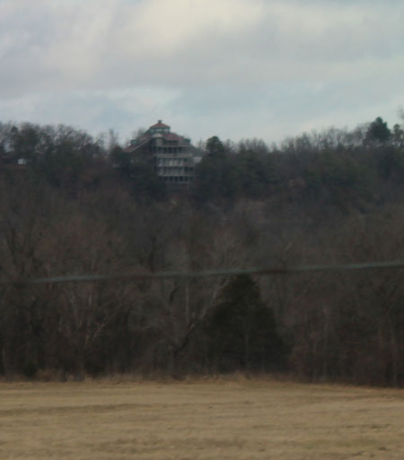 |
| Me & Dad in a rare picture together. I'm usually behind the
camera and he's usually hiding from the camera. |
Driving through Chewy, we saw the kinda-sorta-not-really famous 7-story house. |
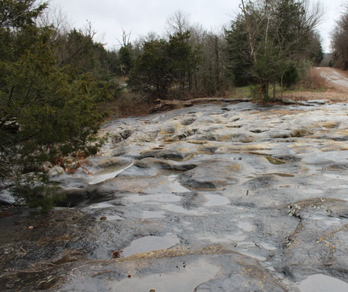 After a bit of searching, we found Bathtub Rocks, an area I'd never
even heard of even |
|
| The rock has interesting erosion patterns all through it. | |
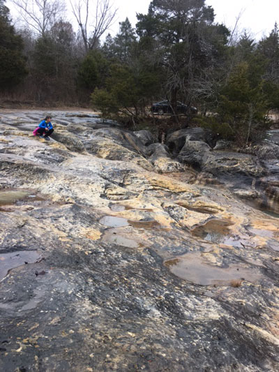 |
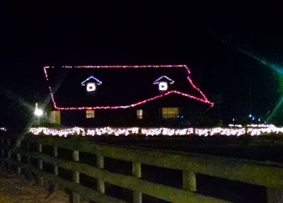 Trying to get a picture of the Christmas lights, but at the wrong time of |
| Here Mom catches me as I'm playing at photography | |